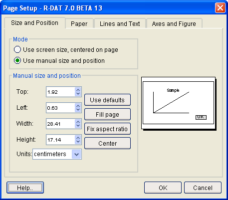
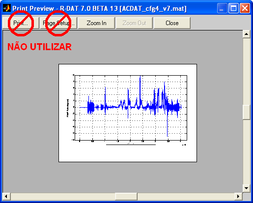
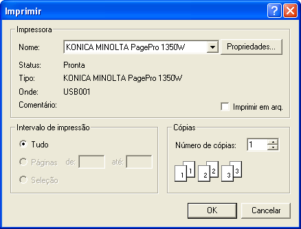

| Menu Arquivo |
|
Impressão
O R_DAT permite a impressão da janela principal nas impressoras instaladas no sistema operacional.
Também
é possível configurar a página para impressão, de forma a
posicionar a imagem da forma mais adequada, e visualizar uma previsão
da impressão.
Configurar Página
Para configurar a página para impressão, clique em “Arquivo ► Configurar página
... “ ou no botão na Barra de Ferramentas.

A caixa de diálogo padrão do MatLab será apresentada, permitindo ao usuário definir a posição da imagem, o tipo e a orientação do papel e outras opções de impressão.
Use o botão "Help.." para obter uma descrição suscinta de cada opção.
A posição da imagem, o tipo e a orientação do papel serão lembrados pelo R_DAT nas sessões
subsequentes, enquanto que as demais configurações serão mantidas apenas durante a seção atual.
Visualizar Impressão
Para visualizar a previsão de impressão da janela principal, clique em “Arquivo ► Visualizar impressão ... “ ou no botão na Barra de Ferramentas.

A ferramenta padrão de visualização de impressão do MatLab será apresentada, permitindo ao usuário visualizar a previsão da impressão de acordo com as configurações de página definidas.
O botão "Zoom In" exibe a imagem em tamanho real e o botão "Zoom Out" exibe a imagem numa escala de 1/4.
|
Nota: Como o R_DAT manipula os objetos da janela principal para impressão, não utilize os botões "Print" e "Page Setup"
da ferramenta, pois será feita uma atualização adicional, sem
manipulação pelo R_DAT, e a impressão não será realizada conforme
desejado. Utilize os botões "Configurar página" e "Imprimir" do próprio
R_DAT para essas finalidades. |
Imprimir
Para imprimir a janela principal, clique em “Arquivo ► Imprimir
... “ ou no botão na Barra de Ferramentas.

A caixa de diálogo padrão do Windows será apresentada, permitindo ao usuário selecionar a impressora desejada, configurar suas propriedades e definir o número de cópias.
Clique no botão "OK" para imprimir a janela principal segundo as configurações de página definidas.
| |
Propriedades |
Carregar
arquivo recente |
|